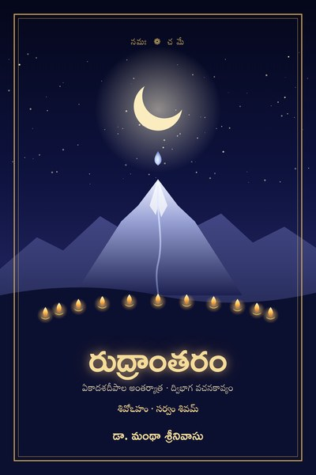

రుద్రాంతరం
ఏకాదశదీపాల అంతర్యాత్ర · ద్విభాగ వచనకావ్యం
Google PlayLibraryదివసంలో పడిన ఒక పరుషవాక్యం అతని నిద్రను హరిస్తుంది. బిగుసుకున్న పిడికిలి, ఈర్ష్యతో నిండిన నయనం, పరులపై ప్రయోగించిన వ్యంగ్యవచనం, విడువలేని పురాణవ్రణాలు, సంతానం కోసం కంపించే భయం, సహస్రచింతలతో అలమటించే మనస్సు — మనందరికీ పరిచితమైన ఈ మానవక్షణాల్లోకి ఎక్కడినుంచో ఒక ప్రాచీన ఋషిస్వరం ప్రవేశిస్తుంది. ఆ స్వరం వెలుగులో క్రోధం కరుణ అవుతుంది, శ్వాస తీర్థమవుతుంది, మనస్సు మౌనమవుతుంది.
దేహమొక దేవాలయం; పది ఇంద్రియాలు, ఏకాదశమైన మనస్సు — ఏకాదశదీపాలు. ఈ దీపాలను ఒక్కొక్కటిగా దర్శిస్తూ సాగే ద్విభాగ వచనకావ్యం రుద్రాంతరం:
ప్రథమ భాగం · నమః — నిశీథం నుంచి ఉషస్సు వరకు ఏకాదశ లయాలు: విడిచిపెట్టడం, లయించడం, తలవంచడం.
ద్వితీయ భాగం · చ మే — ఉషస్సు నుంచి మళ్ళీ నిశీథం వరకు ఏకాదశ పూర్ణాలు: తిరిగి పొందడం, ప్రసాదంగా స్వీకరించడం.
ప్రతి అధ్యాయం ఒక దృశ్యంతో మొదలై, ఒక వేదవాక్యపు వెలుగులో అంతరంగంలోకి దిగి, అశ్రువుల ద్వారా "శివోఽహం" అనే ప్రత్యభిజ్ఞకు చేరుతుంది. ఆ ఋషిస్వరం ఎవరిదో, ఏ మంత్రాలదో — గ్రంథాంతంలోని రహస్యోద్ఘాటనంలో అనుక్రమణికతో సహా వెల్లడవుతుంది.
సంస్కృత పదశ్రీ, శబ్దాలంకార సౌందర్యం, ఆధునిక మనోవిజ్ఞాన దృష్టి కలిసిన ఈ కావ్యం ఒక సంగీత కచేరిలా సాగుతుంది. పాఠకుని హృదయంలో ఒకే అనుభూతిని మిగుల్చుతుంది: నేనూ శివుడనే, నువ్వూ శివుడవే, సర్వం శివమయం.